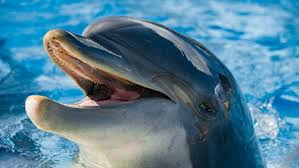
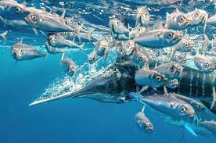
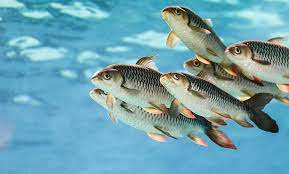

Chuchuk suv hayvonlari. Oʻzbekiston suv havzalarida 80 ga yaqin baliq turlari uchraydi, ulardan 20 ga yaqini (oq doʻngpeshona, ola-bula doʻngpeshona, oq amur, qora amur, ilonbosh, balxash olabulasi va b.) Uzoq Sharqdan; pelyal Sibirdan; gambuziya Amerikadan keltirilgan. Tekislikdagi suvlarga plotva, oqcha, soʻzanbaliq, oqqayroq, zogʻora, laqqa, oq sla, samarqand xramulyasi va xonbaliqlar, togʻ suvlari uchun qorabaliq, gulmohi va goles baliqlar xos. Shim.dagi suv havzalarida choʻrtan baliq, olabugʻa, koʻkboʻyin baliqlar uchraydi. Kam uchraydigan va yoʻqolib borayotgan turlardan Amudaryo va Sirdaryo kurak buruni, bakra baliq bor. Shuningdek, 600 ga yaqin tur umurtqasiz hayvonlar, jumladan 150 tur bir hujayralilar, 120 turdan ziyod kolovratkalar, 100 dan koʻproq tur chuvalchang va mollyuskalar, 120 turdan ortiq qisqichbasimonlar, 100 dan koʻp tur hasharotlar uchraydi. Oʻzbekiston suv havzalariga Uzoq Sharqdan baliqlar bilan birgalikda xitoy baqachanoq (tishsiz) mollyuskasi va uzoq sharq krevetkasi kelib qolgan va keng tarqalgan. Baliqlarning oziq bazasini oshirish uchun suv omborlarida mizid qisqichbaqasini iqlimlashtirish yaxshi natija berdi. Sirdaryo va uning irmoqlarida daryo qisqichbaqasi yashaydi
  